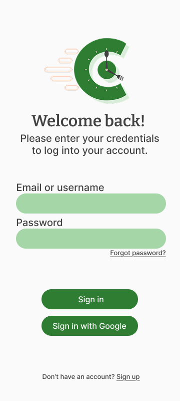
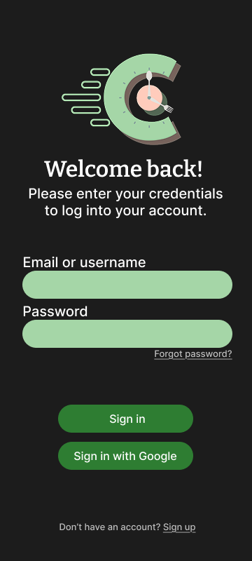
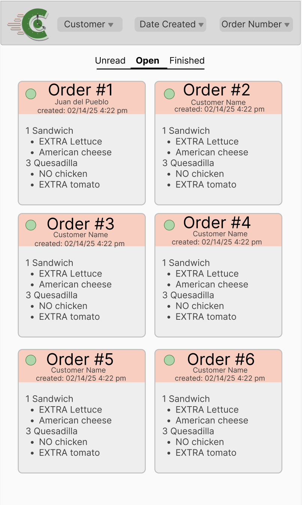
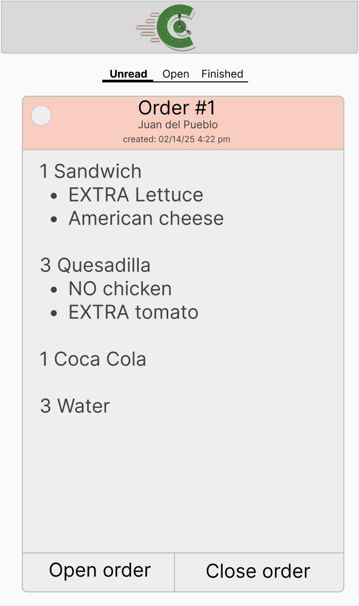
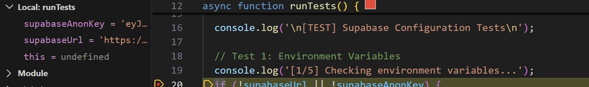
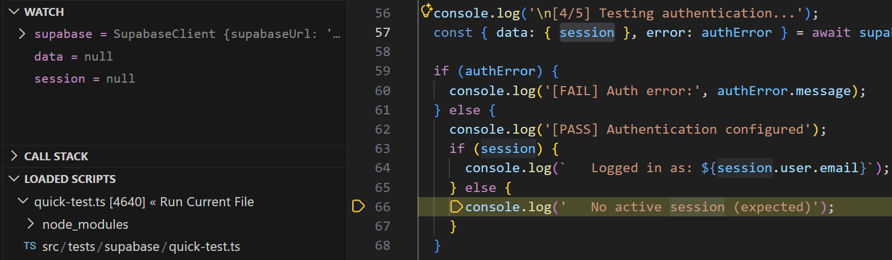
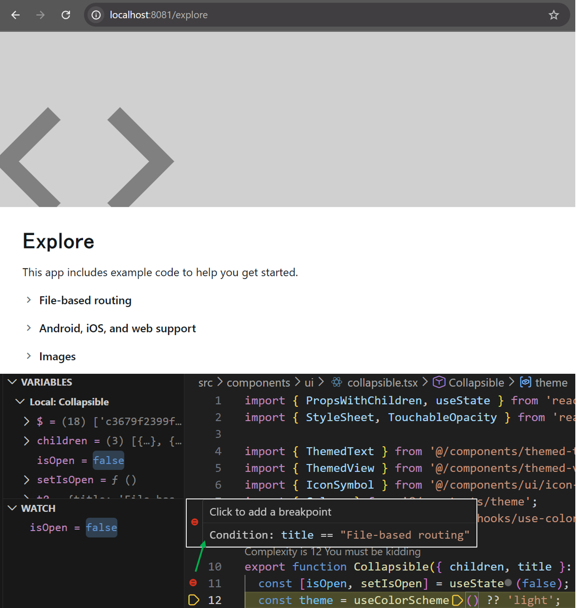

University of Puerto Rico at Mayagüez
College of Engineering
Department of Computer Science and Engineering
Prof. Marko Schutz
INSO 4117-060
Friday, February 27, 2026
Legend
-
Green background - Indicates sections that have been added for the first time into the documentation.
-
Yellow background - Indicates sections that have been modified from the previous version of the documentation.
-
Red background with strikethrough - Indicates sections that have been removed from the previous version of the documentation.
Informative Part
1.1 Team
Team Structure
The project team is organized into four functional divisions: Documentation, Test Planning, Research and Set Up, and UI. Each division has a designated Team Lead responsible for coordinating tasks, tracking progress, and ensuring alignment with project requirements. All team members contribute collaboratively while focusing on their division’s primary objectives.
Managers
The overall coordination of the project is led by:
-
Alma D. Piñero-Calero
-
Taimara P. Colon-Lopez
The managers oversee progress across all divisions, facilitate communication between teams, and ensure that project milestones and academic requirements are met.
Team Divisions
Documentation Team
Objective:
Ensure that the project documentation satisfies all hand-in requirements and aligns with project scope.
Responsibilities:
-
Maintain and update project documentation.
-
Ensure clarity, structure, and completeness of required sections.
-
Verify alignment between implementation and written documentation.
-
Coordinate with other teams as needed.
Team Lead: Reinaldo J. Martinez-Morales
Members:
-
Karina Lopez-Rodriguez
-
Jahdiel E. Montero-Alicea
-
Samarys Barreiro-Melendez
-
Lorenzo A. Perez-Torres
Quality Assurance Team
Objective:
Identify and implement the initial test suite and configure automated testing using GitHub Actions.
Responsibilities:
-
Define testing strategies (unit, integration, etc.).
-
Design test cases based on system requirements.
-
Implement automated tests.
-
Configure and maintain CI workflows using GitHub Actions.
-
Monitor test coverage and reliability.
Team Lead: Jorge L. Deleon-Orama
Members:
-
Horeb Cotto-Rosado
-
Kevin J. Lara-Rodriguez
-
Kian R. Ramos-Vega
-
Lucas A. Matos-Datiz
-
Januel E. Torres-Marquez
-
Devlin Hahn-Acosta
-
Gerardo Y. Soto-Rios
-
Yadriel Rivera-Rodriguez
-
Aryam Z. Diaz-Torres
Research and Set Up Team
Objective:
Research and establish the technical foundation of the project, including mobile framework selection and backend/database configuration.
Responsibilities:
-
Set up the initial project structure and development environment.
-
Implement core functionality using React Native.
-
Evaluate and select an appropriate database solution.
-
Define backend requirements and integration approach.
Team Lead: Fernando Castro-Cancel
Members:
-
Osvaldo F. Figueroa-Canino
-
Yandre Caban-Torres
-
Luis J. Cruz-Cruz
-
Pedro J. Bonilla-Morales
UI Team
Objective:
Define the application’s branding, visual identity, and user experience.
Responsibilities:
-
Design the application’s interface and layout.
-
Establish branding guidelines (colors, typography, design system).
-
Define user workflows and navigation structure.
-
Ensure usability and accessibility standards are considered.
-
Collaborate with the development team to implement UI components.
Team Lead: Yamilette C. Alemany-Vazquez
Members:
-
Daniella I. Melero-Pereira
-
Andrea P. Segarra-Felix
-
Fabiola Z. Torres-Maldonado
-
Natalia S. Vera-Rivera
-
Jon M. Vargas-Torres
-
Kaysha L. Pagan-Lopez
-
Ernesto S. Soto-Rivera
Partners
At this stage of the project, no external partners have been formally integrated. All current partners are internal team members and project managers who have direct responsibility in development and coordination. End users of the application are considered customers rather than partners.
If external partners become involved in later phases, their roles and responsibilities will be formally documented here.
1.2 Current Situation, needs, ideas
1.2.1 Current Situation
Eating at the university cafeteria is a necessity for many students, yet the current environment at the cafeteria is incapable of adequately meeting its high demand. The university cafeteria consistently experiences long lines and heavy traffic, particularly during peak hours. This inefficiency creates a recurring dilemma where students must choose between securing a meal or arriving on time for their next academic commitment. When students are forced to skip meals due to these waiting times, it can result in a substantial negative impact on their overall health, mental focus, and academic performance. The primary cause of this issue is an outdated manual, in-person ordering system that is simply not capable of handling a high volume of students in a short time frame. Currently in the cafeteria, every order and payment transaction is processed manually at the counter, leading to delays during peak demand periods. Consequently, the absence of a streamlined, digital alternative to the manual counter process remains a major hurdle to both student well-being and cafeteria operational efficiency. On a typical visit to the current cafeteria, a student walks to the cafeteria, checks the daily menu posted at the counter, and decides what to eat. To obtain the food, the student joins a single line that leads to the service counter. When the student reaches the counter, they state their order, the student pays for their order at the counter, cafeteria staff serve the food or start preparing it, and then the student picks up the meal when it is ready. Every student must pass through the same sequence of events: join the queue, order, pay, wait for preparation, and pick up the meal. The lack of a structured ordering system leads to long queues, increased waiting times, and operational inefficiencies that affect both students and cafeteria staff.
1.2.2 Needs
The long wait times at the university cafeteria show unmet needs in food service and campus life, not in any specific system or technology. These needs come from how student schedules, cafeteria operations, and institutional restrictions interact, and as a consequence, they affect many stakeholders.
Students
-
Be able to access meals within limited time windows between classes without risking tardiness or absence.
-
Reduce uncertainty around how long it will take to obtain food, especially during peak cafeteria hours.
-
Maintain consistent access to meals that supports health, focus, and academic performance.
-
Avoid having to choose between basic needs and academic responsibilities.
Cafeteria Staff
-
Handle high volumes of orders efficiently without excessive pressure during peak periods.
-
Maintain a smooth operational flow that minimizes crowding and confusion at service points.
-
Receive clearer signals about when demand will come and the volume of orders. This will help better manage preparation.
University Staff
-
Ensure campus services support student retention, wellness, and academic success.
-
Minimize crowds in shared spaces to improve safety and traffic flow.
-
Balance service improvements with resource and staffing constraints.
Ordering
-
Customers need clear visibility of available items, sides, and prices early enough to make a decision without losing time.
-
Customers need confidence that what they request can actually be fulfilled at the moment of ordering.
-
Staff need orders to be communicated unambiguously, such as items, quantities, and special requests to reduce rework, corrections, and misunderstandings.
Paying
-
Customers need to know the total amount they are expected to pay, including any applicable fees, before committing to payment, so they can decide whether to proceed with payment
-
Customers need clear confirmation that payment was accepted and tied to their specific order, so they can avoid order payment conflicts at pickup.
-
Staff need a clear, consistent way to determine whether payment has been completed before a meal is released, to avoid disputes and confusion.
Preparing
-
Staff need preparation work to align with real demand so that surges do not create overwhelming backlogs or food waste.
-
Customers need realistic expectations about preparation time, especially during peak periods when delays are more likely.
-
The preparation step needs a clear notion of order progress so that customers have visibility into the status of their order.
Pickup
-
Customers need a pickup process that is orderly and time-efficient.
-
Staff need to reliably match prepared meals to the correct customer to prevent wrong hand-offs, disputes, and wasted food.
-
Customers need to accurately know when their order is actually ready so they do not cluster at the pickup area unnecessarily or pick up their order late.
System-Wide Needs
-
Reduced trouble between ordering, preparation, payment, and pickup.
-
Alignment between student schedules and cafeteria service capacity.
-
A food-service process that adapts to peak demand patterns.
-
Meals can be obtained reliably and on time, even during busy periods.
Project Level Needs
-
A clear statement of requirements based on stakeholder needs, without reference to any system.
-
A common language used in analysis, design, implementation, and testing to avoid confusion.
-
Planning documents (requirements, architecture, design, and test strategy) to support the solution selected later.
-
A general description of cafeteria operations and how stakeholders interact.
1.2.3 Ideas
Based on the previously discussed needs, a platform where students and staff from the university community can easily order food from the university cafeteria can drastically reduce the waiting time and facilitate staff work. The Cafeteria ordering application can help the aforementioned needs with features such as:
-
Ordering: Now, it’s easier than ever to order from the cafeteria! When a user wants to order an item, the available menu will be displayed with different sections depending on the type of food, sides, snacks and beverages. If an item from the menu is not available, it will not be able to be selected to order. After the user picks out what they want to order, they can choose whether to pay at the register or pay on the app, then, simply click order and done!
-
Payment Options: The user can choose to pay for their order through the app, which will allow them to skip the line and pick up their order as soon as it’s ready. Alternatively, they can choose to pay at the register, which will allow them to pick up their order as soon as they pay for it. In both cases, the system creates an order record owned by the customer, but differ in how the order is processed. An in-app payment marks the order as "Payment Completed" immediately, so it can be prepared and picked up when ready. Payment at register creates a "Pending Payment" order that is tentative until paid. This kind of order must not be held indefinitely, so it can be canceled by the user and should time out if the user does not show up to pay. If after a set interval the user doesn’t pay, the order transitions to "Cancelled Order" to avoid preparing food that will not be picked up. As some orders are paid in the platform and others at the register, staff must be able to quickly verify payment status at pickup and reconcile register payments with the correct order record to avoid double payment, missed payments, or wrong order payments.
-
Pick up times: The user can choose whether to schedule to pick up an order, or also, order instantly to be pick up as soon as possible.
-
Notification system: The project will include notifications for both the user and the cafeteria staff to keep them informed about the status of an order, to improve communication and help coordinate order preparation and pickup.
-
Order security: when the user wants to pick up an order in the designated pick-up station, the user will be given a code that they have to confirm with the staff to then be able to pick up their order, vastly reducing the possibility of having a customer’s order stolen.
-
Cafeteria mode: For the staff to monitor the orders, an “admin mode” will be integrated so that all the orders along with their pickup time will be displayed for the cafeteria staff, as well as notify them for order cancellations, any notes from the orders, etc. The staff will be able to input when an order is being processed, and when the order has been completed.
-
Feedback: The app will ask the users for any feedback after an order has been processed and confirmed, this way, the team can make improvements and tweaks to the application and make the service better.
The application can help students mantain an easier routine for their everyday life, cafeteria staff can be more organized and also cuts down on miscommunication when people have orders taken in person.
1.3 Scope, Span and Synopsis
1.3.1 Scope and Span
Scope
The scope of the project is to develop a digital ordering and pickup platform designed to eliminate the current logistical bottlenecks in the university cafeteria. The platform addresses the inefficiencies of manual counter service that the UPRM cafeteria relies on that forces students to choose between nutrition and being on time for their academic responsibilities.
Domain Engineering: Analyze how the current university food service is offered and identify pain points experienced by students and staff with in-person ordering. This includes examining how long wait times affect student health and focus, as well as structuring the relationships among ordering, payment, preparation, and pickup so that the team develops a shared understanding of cafeteria workflows and operational constraints before moving toward a specific solution.
Requirements Engineering: Define project requirements that allow users to view menus, manage a digital cart, and process remote payments. It also includes engineering the logistics for a notification system, which alerts staff of new orders and notifies students upon order completion, and a secure order pickup protocol using one-time passcodes. These requirements must be made explicit from the perspective of students, staff, and administrators so that later design and implementation decisions are guided by stakeholder needs rather than assumptions.
Software Architecture: The architecture will consist of a web front-end for students and staff. It will integrate a backend ordering engine with a physical infrastructure component: a dedicated, locker-style pickup area designed to reduce counter congestion. Because there is no existing digital infrastructure supporting peak-hour cafeteria operations, early architectural planning is necessary to define responsibilities clearly and reduce the risk of poorly structured design decisions.
Software Design Process: The project will follow an iterative, test-driven development lifecycle. A standardized process for handling order flows and issues will be defined, and a continuous feedback loop with cafeteria staff and students will be used to refine the user interface, pickup flow, and operational procedures over time. The process will also include early planning for testing and evaluation so that improvements such as reduced waiting times, smoother pickup, reliability, and usability can be assessed in a structured way.
Span
The project’s span is focused on creating a localized, high-efficiency solution for the university cafeteria that streamlines the food procurement process.
The application provides users with temporal flexibility, allowing for "ASAP" orders or specific scheduled pickup times. It also includes a dedicated pickup zone that requires a unique code for access, addressing the risk of order theft.
The target audience are UPRM students and staff at the university cafeteria. However, the project also seeks the possibility to include other campus food vendors and integration with university events, such as Come Colegial.
The project will utilize agile development, following its iterative steps, with primary focus on testing, to achieve project completion. In addition, the team will apply a Test-Driven Development approach named red, green, and refactor. Through this approach, developers will write failing tests for small, requirement-derived behaviors before implementing the minimum code needed to pass them, and then refactor the code to improve code quality and maintainability.
Success will be tracked through specific metrics: the volume of orders processed, the speed of order pickup, and the measurable reduction in counter wait times. Additionally, the system will provide data analytics to help cafeteria administrators optimize inventory and staffing levels based on peak demand patterns.
1.3.2 Synopsis
The Cafeteria Ordering System project addresses operational inefficiencies observed in the university cafeteria, particularly during peak service hours. Long waiting times, limited menu visibility, and uncertainty in demand create negative impacts on student well-being and cafeteria workflow. Rather than approaching this situation as a purely technical problem, the project follows a structured software engineering process grounded in domain understanding and systematic analysis.
The project begins with a detailed domain description that formalizes observed phenomena within the cafeteria environment. Through domain sketches, terminology definition, and concept analysis, the team establishes a shared vocabulary that reflects real-world entities, actions, events, and behaviors. This foundation ensures clarity and consistency in subsequent requirements engineering activities.
Building upon the domain model, stakeholder needs are translated into epics, user stories, and structured requirements. These include domain requirements, interface requirements, and machine requirements with measurable performance, availability, and capacity criteria. By defining explicit constraints and measurable targets, the project ensures that any proposed solution aligns with time-sensitive cafeteria operations and institutional limitations.
Early architectural reasoning is incorporated to anticipate system structure and interactions between core components such as ordering, payment processing, notification handling, and pickup coordination. Testing strategies, including Test-Driven Development (TDD) and Behavior-Driven Development (BDD), are integrated into the planned workflow to maintain traceability between requirements and implementation while enabling structured validation and verification.
Throughout the project, documentation, milestone planning, coordinated team roles, ongoing stakeholder communication, progress tracking, and preparation for future iterations or expansion support alignment across analysis, design, testing, and implementation activities. By combining domain modeling, structured requirements engineering, architectural planning, systematic testing preparation, and strong project coordination, the project establishes a comprehensive and well-founded approach to improving cafeteria service efficiency and reliability.
=== 1.4 Other Activities than just developing source code
Developing a software solution is only one part of this project. Though it may seem that way, the issues in the university cafeteria are not purely technical. They come from operational complexity, limited time between classes, and the interactions of stakeholders. Because of this, the project requires several supporting activities other than implementation to ensure that any future solution is effective and sustainable.
==== A key activity for this project is understanding and structuring the domain.
* Cafeteria operations during peak hours rely heavily on manual and informal processes, which makes it difficult to clearly understand how ordering, payment, preparation, and pickup relate to one another. * Creating a domain description would help the team form a shared understanding of these workflows and constraints before moving toward any specific solution.
==== Another important activity is requirements engineering. Although the current situation reveals clear inefficiencies and frustration, there is no formal description of what an improved cafeteria experience should provide for its users.
* Defining requirements helps clarify expectations around functionality, performance, and usage from the perspective of students, staff, and administrators. * Having explicit requirements ensures that later design and implementation decisions are guided by stakeholder needs rather than assumptions.
==== Early design and architectural reasoning are also necessary before any code is written.
* Because there is no existing digital infrastructure supporting peak-hour cafeteria operations, system structure and responsibilities cannot be taken from prior solutions.
* Planning the system architecture and components early helps manage complexity and reduces the risk of poorly structured designs.
==== Planning for testing and evaluation is another essential activity.
* The cafeteria environment is highly time-sensitive, which makes reliability and usability especially important. * Thinking ahead about how the system will be evaluated allows the team to measure improvements such as reduced waiting times and smoother order pickup once a solution is in place.
==== Finally, coordination and project organization tie all project activities together.
* Establishing milestones, documenting decisions, and assigning responsibilities helps keep the team aligned throughout the project. * Maintaining communication with stakeholders supports scope management, progress tracking, and preparation for future iterations or expansion.
By combining domain understanding, requirements definition, design planning, testing preparation, and strong coordination with implementation, the project addresses both the technical and operational factors contributing to the current cafeteria situation.
1.5 Derived Goals
In addition to the primary goal of reducing wait times and improving access to meals in the university cafeteria, the project also pursues several secondary but meaningful outcomes.
One derived goal is to contribute to improve student well-being beyond the immediate act of ordering food. By supporting more predictable access to meals, the project may contribute to promoting healthier daily routines, better time management, and reduced stress during peak academic hours. While the primary objective focuses on operational efficiency, this broader impact on student life represents an important secondary benefit.
Another goal is to support data-informed decision making within cafeteria operations. Even if not fully implemented in early stages, the structured collection of order and demand information creates the possibility for future analysis of peak times, popular menu items, and service bottlenecks. This can help cafeteria management optimize staffing, preparation strategies, and inventory planning over time.
The project also aims to encourage digital transformation within campus services. By introducing a structured, mobile-based ordering approach, the system may serve as a model for how other campus services might modernize their processes. This broader institutional impact extends beyond the cafeteria itself and contributes to a more technology-integrated campus environment.
A further derived goal is to strengthen collaboration and coordination among stakeholders. The structured interaction between students, cafeteria staff, and university administration fosters clearer communication channels and more transparent service processes. Even outside the application’s technical implementation, this improved alignment between stakeholders is a valuable outcome.
At the project level, another secondary goal is to develop strong engineering practices within the team. Through domain analysis, requirements engineering, architectural planning, testing strategies, and documentation, the team builds experience in systematic software development. The artifacts produced during this process—such as requirement specifications, design descriptions, and test plans—form a reusable knowledge base for future academic or professional projects.
Finally, the project seeks to raise awareness about the importance of aligning campus services with student needs. By formally analyzing the current situation and articulating stakeholder needs, the project highlights the connection between operational systems and academic success. This reflective understanding of service design within the university context represents a broader outcome beyond the immediate functionality of the Cafeteria Ordering System.
Descriptive Part
2.1 Domain Description
2.1.1 Domain Rough Sketch
The following snippets are raw records of observations and stakeholder experiences within the university cafeteria.
-
The 10-Minute Dash: A student walks from the Engineering building toward the cafeteria at 12:05 PM. A small group arrives at the cafeteria at the same time to find a line that extends about 15 people toward the hallway. Some people looks at their watch and decide to walk to their next classroom. They are heard muttering that they’ll just have to wait until 4:00 PM to eat.
-
The Kitchen’s Blind Spot: The kitchen staff members create multiple big trays which contain the "El colegial special" in the back of the kitchen. The team operates at high speed but maintains uncertainty about whether 10 or 100 students will enter the building within the next ten minutes will order. The staff members display visible pressure when 20 students enter the service area which becomes overlwhelming.
-
The Post-Lunch Fatigue: Multiple students show signs of falling asleep during the 2:00 PM Biology lecture while they try to maintain their attention on the lesson. A student, when exiting the class, states that he skipped the meal because of the long line which may have caused him to miss his class. The student explained that his lack of food would affect his mental focus and academic performance throughout the day.
-
The Payment Bottleneck: A student reaches the front of the line and is told that the payment system is down. The student waits for 3 minutes while the staff tries to fix the issue. Then, the student and every person behind him/her becomes visibly frustrated and expresses concern about being late for their next class.
-
The uncertainty of the menu: A student stands at the back of the line, which has spilled out into the hallway near the exit of the cafeteria. From this distance, he cannot see the daily whiteboard or the steam table. He spends 5 minutes moving forward to only discover what the sides or prices are once they are two people away from the counter.
2.1.2 Terminology
The terminology defined in this section is derived from recurring phenomena observed in the domain rough sketch. These terms are not arbitrary labels; rather, they represent abstractions of stakeholder experiences, operational constraints, and observable interactions within the cafeteria environment. Together, they establish a shared vocabulary for subsequent concept analysis and requirements work.
- Customer
-
(entity, domain) A person who obtains food or beverages from the cafeteria, including students, faculty, staff, or visitors.
- Student
-
(entity, domain) A person enrolled at the university who may act as a customer when obtaining food or beverages from the cafeteria, typically within limited time windows between academic activities or responsibilities.
- Cafeteria
-
(entity, domain) A food-service environment on campus where meals are prepared, ordered, paid for, and collected.
- Cafeteria Staff
-
(entity, domain) Staff responsible for preparing meals, handling orders, processing payments, and managing the cafeteria.
- Meal
-
(entity, domain) A set of food and/or beverage items offered by the cafeteria during operating hours, including prepared items (e.g., hot dishes) as well as non-prepared items (e.g., bottled drinks, water, or packaged goods).
- Menu
-
(entity, domain) A collection of meals and side options available during a specific period, whose visibility and accessibility may affect student decision-making before ordering.
- Order
-
(entity, domain) A request made by a customer for one or more items from the menu.
- Queue
-
(entity, domain) An ordered sequence of students waiting to place an order or complete payment, especially visible during peak periods when lines extend beyond the primary service area.
- Service Period
-
(entity, domain) A continuous time window during which the cafeteria is open and serving meals.
- Order Placement
-
(action, domain) The act of selecting menu items and communicating the request to cafeteria staff.
- Payment
-
(action, domain) The process of transferring money from a customer to the cafeteria in exchange for selected items, including the possibility of service disruption when payment processing fails. In the current domain, payment may occur at or after receiving the meal (e.g., upon tray pickup), rather than strictly at order placement. This behavior may change once the system is introduced.
- Meal Preparation
-
(action, domain) The production of meals in advance or in response to incoming orders, often under uncertainty about near-term customer demand.
- Meal Pickup
-
(action, domain) A customer receiving prepared or selected items after an order has been completed.
- Waiting Time
-
(attribute, domain) The elapsed time between a customer joining the queue and receiving their meal, often influencing whether the customer remains in line or leaves due to time pressure.
- Student Has Just Joined the Queue
-
(event, domain) The moment a student enters the line to place an order.
- Order Has Just Been Placed
-
(event, domain) The moment a customer’s order is communicated to cafeteria staff.
- Payment Has Just Failed
-
(event, domain) The moment a payment attempt does not complete successfully, causing a delay in service.
- Meal Has Just Been Prepared
-
(event, domain) The moment a meal becomes ready for pickup.
- Student Has Just Left the Queue Without Ordering
-
(event, domain) The moment a student abandons the line due to time pressure or other circumstances.
- Crowd Surge
-
(behavior, domain) A situation that occurs when large numbers of students arrive within a short time spans. This leads to long queues and increased service pressure.
- Time-Constrained Decision Making
-
(behavior, domain) A behavior in which customers evaluate whether to wait for food based on current queue conditions, expected waiting time, and proximity to their next responsibility.
- Uncertain Demand Preparation
-
(behavior, domain) A pattern where cafeteria staff prepare meals without precise knowledge of near-term demand volume, creating pressure in periods of sudden customer arrival.
- Service Bottleneck
-
(behavior, domain) A recurring slowdown caused by limited capacity in ordering, payment, or preparation, often becoming most visible during demand surges or operational failures.
The domain description above also establishes several important properties of the cafeteria environment that motivate the domain requirements. In this domain, every order contains at least one menu item and is associated with a specific customer. Menu items may become unavailable during a service period due to inventory limitations or preparation constraints. Orders progress through distinct preparation stages before they are eligible for pickup. Each menu item has an established price that contributes to the total cost of the order, and an order may only be released once preparation has been completed. The domain also includes the possibility of order cancellation before fulfillment, payment obligations that must be satisfied before release, customers who are not limited to students, and preparation times that may vary according to the order and current kitchen conditions.
==== 2.1.3 Domain Terminology in Relation to Domain Rough Sketch
This section relates the defined domain terminology (Section 2.1.2) to specific observations documented in the domain rough sketch (Section 2.1.1). The terminology presented here represents processed and abstracted concepts derived from real-world domain phenomena observed in stakeholder experiences and operational conditions.
The rough sketch provides raw observations of behaviors, constraints, and interactions within the cafeteria environment. Through analysis, these observations were abstracted into formal domain concepts, entities, actions, events, attributes, and behaviors.
The following relationships illustrate how domain terminology originates from observed domain phenomena:
* Queue, Waiting Time, and Student Has Just Joined the Queue - Derived from The 10-Minute Dash, where students encounter a line extending approximately 15 people into the hallway. This observation demonstrates the existence of an ordered sequence of students waiting for service (Queue), measurable delays between joining and receiving service (Waiting Time), and the identifiable moment when a student enters the queue (Student Has Just Joined the Queue).
* Student Has Just Left the Queue Without Ordering and Time-Constrained Decision Making - Derived from The 10-Minute Dash and The Post-Lunch Fatigue, where students decide to leave the line due to insufficient available time before their next academic commitment. These observations reveal that students evaluate waiting time against external time constraints, resulting in the observable event of abandoning the queue.
* Meal, Meal Preparation, and Batch Preparation Under Unpredictable Circumstances - Derived from The Kitchen’s Blind Spot, where cafeteria staff prepare multiple trays of meals without precise knowledge of how many students will arrive. This demonstrates the existence of prepared food units (Meal), the act of producing those meals (Meal Preparation), and the behavior of preparing food under demand uncertainty (Batch Preparation Under Unpredictable Circumstances).
* Crowd Surge and Service Bottleneck - Derived from The Kitchen’s Blind Spot and The Payment Bottleneck, where sudden increases in arriving students create operational pressure and service delays. These observations establish the behavior of rapid increases in student arrival (Crowd Surge) and the resulting slowdown in service processes (Service Bottleneck).
* Order, Order Placement, and Order Has Just Been Placed - Derived implicitly from all rough sketch scenarios involving students progressing through the cafeteria service process. These observations demonstrate that students communicate requests for meals, resulting in identifiable moments when requests are formally made.
* Payment and Payment Has Just Failed - Derived from The Payment Bottleneck, where the payment system becomes unavailable, preventing students from completing transactions. This observation demonstrates the existence of a monetary exchange process (Payment) and identifiable failure events within that process (Payment Has Just Failed).
* Menu and Menu Visibility Constraints - Derived from The Uncertainty of the Menu, where students are unable to see available meal options or prices until reaching the front of the queue. This establishes the existence of a defined set of available meal options (Menu) and the dependency of student decision-making on access to this information.
* Meal Pickup and Meal Has Just Been Prepared - Derived from the implicit service flow observed across all rough sketch scenarios, where meals are prepared and subsequently transferred to students. This establishes the existence of a distinct moment when a meal becomes available (Meal Has Just Been Prepared) and the act of receiving that meal (Meal Pickup).
* Cafeteria Staff and Operational Pressure Under Demand Variability - Derived from The Kitchen’s Blind Spot and The Payment Bottleneck, where staff members prepare meals and respond to sudden increases in student arrivals and operational disruptions. These observations establish cafeteria staff as active domain entities responsible for food preparation and service execution.
These relationships demonstrate that the terminology defined in Section 2.1.2 is not arbitrary, but rather the result of systematic abstraction and formalization of domain phenomena observed in the rough sketch. This ensures that the terminology accurately reflects the domain environment and provides a reliable conceptual foundation for subsequent domain modeling and requirements analysis.
2.1.4 Narrative
The university’s cafeteria functions as one of the primary food services that support the daily nutritional needs of students, staff, and faculty. Often individuals depend on the cafeteria to receive their prepared meals under tight schedules that are most likely caused by multiple classes, team meetings, work responsabilities, or campus activities. Due to the students having similar break periods, demand for the cafeteria’s services increase exponentially during some hours, most specifically midday or the universal hour on Tuesdays and Thursdays.
For the current domain environment, the process begins the moment a customer physically arrives at the cafeteria. Once the customer has arrived, they see the available food options presented by the cafeteria through the menu written on a board, or a handheld menu depending on inventory availability. After reviewing the available options, the customers decide which meals they wish to receive.
To receive their meals, customers join a physical queue that forms close to the service counter. This queue advances sequentially as every customer gets attended by the cafeteria staff. When a customer reaches the service point, they communicate their wanted items to the personnel, who are then responsible for preparing the requested food. Some items may be immediately available, while other meals would require short preparation time, making the service duration vary between services.
As the requested items are prepared, the customer proceeds to complete the payment method through the established cafeteria payment processes. Confirmation of payment is required before the order is given to the customer. When payment finalizes, the customer receives their prepared meal and exits the service, which then allows the next individual in the queue to be serviced.
The arrival rate during peak demand periods frequently exceeds the service capacity of the cafeteria staff, lenghtening queues and increasing waiting times. Customers must often make time sensitive decisions whether to remain in line based on their upcoming academic or work obligations. From the other side, the cafeteria personnel experience increased workload, which can affect the preparation pace, communication, and overall service.
From an observational standpoint, this domain includes entities such as customers, cafeteria staff, menu items, orders, payments, preparation, activities, and pickup events. Natural relationships exist among these entities, as customer selects one or more menu items, an order then aggregates the selected items associated with the customer. The cafeteria staff then prepare the items associated with the order, and payment must be completed before the order is released. The availability of menu items could change over time, based on inventory levels and preparations constraints.
Environmental factors such as time of day, academic calendar events, present staff, and the physical layout of the cafeteria further influence the service performance and waiting times for the customer. These real world characteristics shape how the cafeteria operations unfold without the support of any software system.
Understanding these domain dynamics, including the formation of a queue, the time demand, preparation variability, and capacity limitations, provides the necessary foundation for a further requirement analysis, architectural design, and system development activities.
2.1.5 Events, Actions, and Behaviors
This section distinguishes between events, actions, and behaviors in the cafeteria domain. The distinction is important because it clarifies what is observed as an instantaneous moment (event), what is performed as an intentional act by an actor (action), and what emerges as a process or recurring pattern over time (behavior).
There is a difference between:
-
the moment from which a student has just become a member of the queue (event),
-
the act of becoming a member of the queue (action),
-
and the process consisting of various smaller actions that together make up "becoming a member" during a service period (behavior).
Events (Observable Moments)
An event is an observable "just happened" moment: a point in time at which the domain state has changed. Events are useful to describe transitions and to connect domain observations to later requirements and system representations.
Examples (from Section 2.1.2):
-
Student Has Just Joined the Queue — the moment a student enters the line.
-
Order Has Just Been Placed — the moment the student’s request is communicated to staff.
-
Payment Has Just Failed — the moment a payment attempt does not complete successfully.
-
Meal Has Just Been Prepared — the moment the meal becomes ready for pickup.
-
Student Has Just Left the Queue Without Ordering — the moment the student abandons the line.
Each event captures a transition moment that can be observed directly in the cafeteria environment.
Actions (Acts Performed by Actors)
An action is an intentional act performed by an actor (student or cafeteria staff) that changes the state of the domain. Actions often lead to events. Multiple actions may be required before a particular event becomes observable.
Examples (from Section 2.1.2):
-
Order Placement — the act of selecting menu items and communicating the request to cafeteria staff.
-
Payment — the act of attempting to complete a transaction at the counter.
-
Meal Preparation — the act of producing meals in advance or in response to incoming orders.
-
Meal Pickup — the act of receiving the prepared meal.
Actions describe what participants do, while events describe the moment we can observe the outcome of those actions.
Behaviors (Processes and Patterns Over Time)
A behavior is a process or recurring pattern that unfolds over time and is composed of multiple actions and events. Behaviors describe how the cafeteria operates under certain conditions, especially during peak hours.
Examples (from Section 2.1.2):
-
Crowd Surge — many students arrive in a short time span, creating long queues and pressure.
-
Time-Constrained Decision Making — students evaluate waiting time versus their schedules and decide whether to stay or leave.
-
Uncertain Demand Preparation — staff prepare meals without precise near-term demand information.
-
Service Bottleneck — recurring slowdowns due to limited capacity in ordering, payment, or preparation.
Behavior decomposition example:
Behavior: Service Bottleneck (payment) Actions involved: Payment attempts, staff troubleshooting, repeated retries Events observed: Payment Has Just Failed; Student Has Just Left the Queue Without Ordering Outcome: increased waiting time and reduced service throughput
Why This Distinction Matters
This distinction supports later requirements and testing work:
-
Events identify the exact moments when state changes occur (useful for tracking and notification requirements later).
-
Actions describe what users and staff do (useful for defining system interactions and responsibilities).
-
Behaviors capture the recurring patterns that drive the main problem (long waiting times), especially during peak periods.
2.1.6 Function Signatures
This section defines the core operations of the cafeteria ordering system. The signatures outline the inputs, the required state or dependencies, and the resulting outputs or state changes. To account for operations that might fail, like out of stock items or payment failures, we use an Option datatype wrapper to indicate a possible result or a failure.
-
User Registration To register a new student or faculty member, the system interacts with the central user database. It returns the updated database and potentially the newly created user profile if successful.
registerUser : UserDatabase >< UserDetails → UserDatabase >< (Option UserProfile) -
Browsing the Menu Retrieving the available food items requires access to the active menu catalog.
viewMenu : MenuCatalog → List(MenuItem) -
Managing the Cart When a customer adds an item, the operation alters the local state of their cart rather than the global database, minimizing dependencies.
addItemToCart : Cart >< MenuItem >< Quantity → Cart -
Placing an Order Placing an order requires the current cart, the customer details, and the global order records. If items are out of stock or the cart is invalid, the operation might fail, returning an
Optionfor the generated order.placeOrder : OrderRecords >< Cart >< Customer → OrderRecords >< (Option Order) -
Processing Payments This operation takes the finalized order and a payment method, interacting with the payment system. It yields a receipt upon success or indicates a failure.
processPayment : PaymentSystem >< Order >< PaymentMethod → PaymentSystem >< (Option Receipt) -
Updating Order Status As cafeteria staff prepare the food, they update the order’s progress (e.g., Pending, Preparing, Ready). This changes the state of the active order list.
updateOrderStatus : ActiveOrderList >< OrderID >< Status → ActiveOrderList -
Canceling an Order If a customer or staff member cancels an order, the system must reverse the transaction, updating the records and potentially issuing a refund.
cancelOrder : OrderRecords >< OrderID → OrderRecords >< (Option RefundStatus)
2.2 Requirements
2.2.1 User stories, epics, and features
Epics
===== Meal Ordering and Access A high-level feature area focused on supporting customers in selecting, ordering, and obtaining food efficiently during limited time windows. This epic connects to features such as menu visibility, order placement, and meal pickup coordination.
===== Payment Processing A high-level feature area focused on enabling reliable and flexible payment options for customers. This includes handling transactions, managing failures, and supporting different payment moments within the service flow.
===== Peak-Hour Flow Management A high-level feature area focused on helping cafeteria staff manage large numbers of customers during peak hours. This includes reducing congestion, improving queue handling, and supporting smoother service flow.
===== Service Reliability and Coordination A high-level feature area focused on maintaining consistent cafeteria operations. This includes minimizing delays, handling disruptions, and ensuring coordination between ordering, preparation, and pickup.
User Stories
As a Customer
* I want to see available food and drink options before ordering, so that I can decide whether waiting fits my schedule.
* I want to know when my order is ready for pickup, so that I can minimize the time I spend waiting.
As a Cafeteria Staff Member
* I want to have visibility into incoming orders, so that I can prepare meals more efficiently.
* I want to manage service flow during busy periods, so that congestion and delays are reduced.
Features
Meal Availability Information
Provides customers with visibility into available meals and beverages during a service period. This feature supports the Meal Ordering and Access epic and enables user stories related to decision-making before joining the queue.
Order and Payment Handling
Supports the creation and processing of customer orders, including the handling of payments and potential payment failures. This feature connects to both the Meal Ordering and Access epic and the Payment Processing epic, ensuring that orders move correctly through the system.
Demand Awareness Support
Provides cafeteria staff with information about incoming orders and expected demand. This feature supports the Peak-Hour Flow Management epic and helps staff prepare meals under uncertain demand conditions.
Service Flow Coordination
Coordinates the progression from order placement to meal preparation and pickup. This feature supports the Service Reliability and Coordination epic and ensures smoother transitions between service stages.
2.2.2 Personas
Personas are different representative archetypes of the primary users within the cafeteria service domain. They help the development team to mantain a shared understanding of the user’s needs, behaviors, and constraints when defining user stories, features, and system requirements. The following personas were built with the common characteristics observed among members of the university who regularly interact with the cafeteria.
Persona 1 — Carlos the Time Constrained Student
-
Role: Undergraduate Student
-
Age Range: 18-23
-
Primary Goal: Obtain food quickly between classes
-
Environment: Busy academic schedule with short breaks
Carlos is a full time undergraduate student who usually has a tight schedule between classes and university activities. His available time to obtain meals is limited to short time spaces between mentioned classes. During peak hours, Carlos often encounters long cafeteria lines, which creates uncertainty about whether he can get food before his next class begins.
Carlos values speed, predictability, and efficiency when acquiring food from a place. Long waiting times or unclear service flow impact his daily routine negatively. He cannot afford a big delay in his schedule, and prefers solutions that help him make quick, informed decisions about getting a prepared meal.
Persona 2 — Mariana the Organized Commuter
-
Role: Commuter Student
-
Age Range: 19-24
-
Primary Goal: Plan meals around time on campus
-
Environment: Balances commuting time with academic responsibilities
Mariana is a student who travels to campus and tries to optimize her time while she is present at the university because she does not remain on campus all day. This student prefers to plan when and where she will obtain food in advance.
Uncertainty about the availability and congestion of the cafeteria makes planning difficult for Mariana. She values visibility into the service’s conditions and prefers predictable food service experiences that allow her to coordinate her meals with her commuting schedule. The inefficiencies in the current process can lead her to skip meals or seek off campus alternatives.
Persona 3 — José the Cafeteria Staff Member
-
Role: Cafeteria Personnel
-
Age Range: 25-55
-
Primary Goal: Serve customers efficiently while maintaining quality
-
Environment: High workload during peak hours
José is a staff member of the cafeteria that is responsible for preparing and delivering customer orders. His workload fluctuates significantly depending on the time of day and customer congestion. During peak periods, José must manage rapidly the order intake, food preparation, and customer communication all simultaneously.
José values a clear order flow which has manageable workload distribution, along with smooth customer interactions. When queues become too long or customer demand suddenly increases, service pressure increases and the chance for a delay or miscomunication rises. Operational improvements that reduce this congestion and improve the workflow directly benefits José’s ability to mantain the service’s quality.
Persona Summary
Together, these personas capture the primary perspectives within the domain:
-
Time constrained customers that are seeking fast service
-
Planning oriented customers that seek predictability
-
Personnel managing the operational workload for a good service
They will guide the justification of user stories, epics, and functional requirements in subsequent sections of this document.
2.2.3 Domain Requirements
The following requirements are derived from the domain description in Section 2.1. They define what the system must represent, enforce, or communicate in order to remain consistent with the cafeteria ordering domain.
-
DR-01: Order Composition
-
The system must associate every order with a non-empty set of menu items.
-
-
DR-02: Item Availability
-
The system must prevent a customer from adding an unavailable menu item to an order.
-
The system must track and expose whether each menu item is currently available for ordering.
-
-
DR-03: Order Ownership
-
The system must associate every placed order with the specific customer who initiated it.
-
-
DR-04: Order Preparation Lifecycle
-
The system must allow cafeteria staff to update and track the preparation stage of an order.
-
-
DR-05: Pricing and Total Calculation
-
The system must calculate the total price of an order based on the prices of the selected menu items.
-
-
DR-06: Order Fulfillment
-
The system must communicate to the customer when the customer’s specific order has transitioned to the ready-for-pickup state.
-
-
DR-07: Order Cancellation
-
The system must support the handling of order cancellations and notify cafeteria staff when an order has been canceled.
-
-
DR-08: Payment Confirmation Before Release
-
The system must represent the payment status of an order and must distinguish orders that are pending payment from those whose payment has been completed before the order is released to the customer.
-
-
DR-09: Customer Scope
-
The system must support order placement by cafeteria customers and must not assume that all customers are students.
-
-
DR-10: Preparation Time Variability
-
The system must represent preparation time as a variable property of an order rather than as a fixed constant for all orders.
-
2.2.4 Interface Requirements
Interface requirements describe how shared phenomena and concepts in the cafeteria domain are represented inside the Cafeteria Ordering System, and how those representations are initialized, updated, corrected, and constrained. In other words, they define how the system crosses the boundary between the outside world (the cafeteria domain) and the system’s internal data model.
In this project, key domain concepts that must be represented in the system include: Menu, Meal, Order, Payment choice, Meal Preparation status, and Meal Pickup status (see domain terminology in Section 2.1.2). The interface requirements below capture how these concepts enter the system, how they remain consistent when the domain changes, and what information can or cannot be modified once recorded.
Interface Requirement Set
The requirements in this section use the convention IR-2.2.4-X.
IR-2.2.4-1 Menu representation initialization
The system shall provide a means for authorized cafeteria staff to initialize the menu representation inside the system, including creating menu items and assigning prices and categories.
IR-2.2.4-2 Menu representation update
The system shall provide a means for authorized cafeteria staff to update menu item information when the domain changes, including updating price, description, and category.
IR-2.2.4-3 Availability synchronization
The system shall provide a means for authorized cafeteria staff to mark menu items as available or unavailable to reflect real-world availability changes (e.g., sold out, not prepared today).
IR-2.2.4-4 Customer menu visibility
The system shall provide a means for customers to view the current menu representation and availability status through the application interface.
IR-2.2.4-5 Order creation from domain observation
The system shall provide a means for a customer to create an order representation by selecting menu items and quantities through the application interface.
IR-2.2.4-6 Order modification before submission
The system shall provide a means for a customer to edit an order representation before submission (e.g., add/remove items, change quantities), so incorrect or incomplete entries can be corrected prior to placing the order.
IR-2.2.4-7 Order submission and confirmation
The system shall provide a means for a customer to submit an order and receive confirmation that the system has recorded the order representation.
IR-2.2.4-8 Payment method capture and constraints
The system shall provide a means for a customer to indicate a payment method option (e.g., pay at register or pay in app, if supported).
If an order is submitted, the system shall restrict changes to the recorded payment option unless an explicitly supported correction path exists (e.g., cancellation and re-submission), to preserve consistency and avoid operational confusion.
IR-2.2.4-9 Order status synchronization (staff side)
The system shall provide a means for authorized cafeteria staff to update the internal order status representation to reflect real-world progression (e.g., order is being prepared, order is ready for pickup, order has been picked up, order cancelled).
IR-2.2.4-10 Order status visibility (customer side)
The system shall provide a means for the customer to view the current order status representation through the application interface.
IR-2.2.4-11 Correction after submission (controlled editing)
After an order is submitted, the system shall either: (a) disallow customer edits to order contents, or (b) restrict customer edits to explicitly defined operations (e.g., cancellation within an allowed window), so the internal representation remains consistent with cafeteria operations.
Any staff-side changes to a submitted order representation (if supported) shall be restricted to explicitly defined operations and should be traceable (e.g., include reason or note), to prevent silent corruption of the internal record.
IR-2.2.4-12 Immutable identifiers and record integrity
The system shall assign each submitted order a stable identifier.
The system shall ensure core properties of a submitted order record remain stable (at minimum: order identifier and submission timestamp), except through explicitly defined correction operations, to support auditability and coordination between customers and cafeteria staff.
IR-2.2.4-13 Interface decomposition note
Some requirements that appear to be interface-only include both interface and non-interface aspects. For example, “the system supports creating an order” includes: * An interface requirement aspect: the system provides UI mechanisms for customers to select items and submit an order. * A non-interface aspect: the system creates and stores an internal order representation and enforces rules.
This section focuses on the boundary/interface aspects: how information is captured and kept consistent when the domain changes. Domain rules and internal constraints are specified in the domain and machine requirements sections.
Derived questions used to identify interface requirements
The interface requirements above were derived by identifying domain concepts that must be represented in the system and then asking:
-
How is the internal representation first obtained (who enters it, through what interface)?
-
How is it kept up-to-date when the real-world phenomenon changes (e.g., availability, order status)?
-
What information can be corrected if entered incorrectly or incompletely?
-
What information should be restricted or immutable after submission to preserve integrity?
2.2.5 Machine Requirements
This section defines the measurable, technical requirements that the Cafeteria Ordering System must satisfy. Unlike domain requirements (which describe what the system must do from a stakeholder perspective) or interface requirements (which describe how users interact with the system), machine requirements specify the performance, capacity, availability, and technical constraints the implemented system must meet. These requirements are currently under active development and will be refined as the project progresses through design, implementation, and testing phases.
Performance Requirements
The system must satisfy specific performance criteria to ensure students can complete orders within their limited time between classes.
| Requirement | Measurable Criterion |
|---|---|
Order placement response time |
When a student submits an order, they receive confirmation within 2 seconds for 95% of attempts during normal system usage |
Menu loading time |
95% of menu loads complete within 1.5 seconds |
Notification delivery |
Status updates delivered within 3 seconds of change |
Payment processing |
Initiation to confirmation within 5 seconds (excluding external gateway) |
Menu search |
90% of searches return results within 1 second |
Normal load is defined as system usage below 80% of the concurrent user capacity specified below. These measurements assume standard university WiFi with minimum 10 Mbps bandwidth and are measured from user action to interface confirmation.
Availability and Reliability
Availability requirements ensure the system remains accessible during critical meal periods.
| Requirement | Measurable Criterion | Status |
|---|---|---|
Core functionality uptime |
99.5% available during operating hours (M-F, 7AM-6PM) |
Defined |
Maintenance windows |
Scheduled only outside operating hours with 48hr notice |
Defined |
Crash recovery |
Automatic recovery within 2 minutes |
Defined |
Data persistence |
No confirmed orders lost after payment confirmation |
Defined |
Graceful degradation |
Appropriate error messages during partial outages |
To be refined |
Criteria for acceptable degradation during partial outages and specific recovery time objectives for various failure scenarios remain to be defined as the project progresses.
Capacity Requirements
Capacity requirements define the system’s ability to handle varying user loads.
| Requirement | Measurable Criterion | Clarification |
|---|---|---|
Concurrent users |
300 simultaneous users during peak periods |
Users active within last 5 minutes |
Order throughput |
60 orders per minute during peak hours |
Includes validation, payment, updates, notifications |
Registered accounts |
10,000 total user accounts (~amount of students at UPRM) |
- |
Staff concurrent access |
5 simultaneous cafeteria staff sessions |
For order management |
Active menu items |
100 items across all categories |
- |
Peak periods are defined as 11:30 AM - 1:30 PM and 3:00 PM - 5 PM on weekdays during the academic semester.
When capacity is exceeded: The system shall implement request queuing with appropriate user feedback about increased wait times. Users beyond capacity shall receive a friendly message indicating high traffic with suggestions to try again later or proceed to the in-person line. All capacity exceedance events shall be logged for capacity planning and future scaling decisions.
Platform Requirements
Platform requirements specify the technical environment for system operation.
| Requirement | Specification |
|---|---|
iOS support |
iOS 15 or later |
Android support |
Android 12 or later |
Screen size compatibility |
4.7 inches to 6.9 inches |
Network tolerance |
Function with intermittent connectivity; cache menu data; allow offline order composition |
Older devices may experience reduced performance but must remain functional for core ordering features. Server specifications will be verified against actual performance during testing.
Security requirements protect user data and system integrity.
| Requirement | Measurable Criterion |
|---|---|
Authentication |
Secure protocols with password hashing and HTTPS for all transmissions |
Payment data |
No storage of complete payment card information; PCI-compliant gateways |
Session management |
Inactive sessions timeout after 15 minutes |
Data encryption |
All personally identifiable information encrypted at rest |
Access control |
Staff access restricted to order management; students cannot access staff functions |
Traceability to Domain Needs
The machine requirements above derive directly from domain needs identified in Section 1.2.2.
| Domain Need (from 1.2.2) | Related Machine Requirements |
|---|---|
Students need meals within limited time windows |
Order placement: 2 sec; Menu loading: 1.5 sec; Throughput: 60 orders/min |
Staff need to handle high volumes efficiently |
Throughput: 60 orders/min; Staff sessions: 15 concurrent; Notifications: 3 sec |
Reduce uncertainty around food access |
Uptime: 99.5%; Payment processing: 5 sec |
Minimize crowds and improve safety |
Concurrent users: 300; Remote ordering reduces physical queues |
Requirements Under Investigation
Several machine requirements areas require additional research and stakeholder input before measurable criteria can be established.
| Area | Investigation Needed | Target Completion |
|---|---|---|
Extreme load performance |
Acceptable performance beyond 300 concurrent users |
Milestone 2 |
Battery consumption |
Maximum acceptable drain per hour of active use |
Milestone 2 |
Data usage limits |
Maximum acceptable mobile data consumption per month |
Milestone 2 |
Offline functionality |
Which features must work completely offline |
Milestone 2 |
Accessibility compliance |
Specific WCAG compliance level required |
Milestone 2 |
Cross-platform consistency |
Degree of visual/functional consistency required across iOS and Android |
Milestone 2 |
Evolution of Requirements
All machine requirements will be validated through prototype performance testing, refined based on stakeholder feedback, and adjusted according to university infrastructure limitations and available resources. Changes to these requirements will be documented, version-controlled, and communicated to the project team to ensure alignment across all development activities.
2.3 Implementation
|
Note
|
Since the Cafeteria Ordering project is still in early development, the software platform has yet to be fully implemented. This means that pseudocode may also be used to help describe an implementation, but as the project continues getting programmed in the future, the selected fragment’s codes might change. |
The Cafeteria Ordering project implements a client-server architecture using TypeScript as the programming language for the application layer, and React Native as the framework for it since it better fit the vision for the application. As for the backend and database layers, they are managed using Supabase and PostgreSQL for storing information like user accounts, menu items, all the orders and their status, among other items. Additionally, the application handles notifications using the Expo Notifications API, primarily notifying the users of important status information about their orders.
2.3.1 Selected Fragments of the implementation
To further add to the implementation of the project, the following selected fragments of the project were selected as crucial parts of the application that will be explained using source code, diagrams and pseudocode explinations.
Order Creation and Validation
As said in the name, ordering is the core part of the Cafeteria Ordering App. Therefore, our system must validate a list of processes that ultimately validates the user’s order.
The following code can help illustrate how the system currently handles this order processing logic:
export async function createOrder(order: Order) {
const { data, error } = await supabase.from('orders').insert({student_id: order.student_id, items: order.items, total: order.total, status: 'Pending',})
if (error) {
console.error('Error when creating order:', error.message)
return null
}
await Notifications.scheduleNotificationAsync({
content: {
title: 'Order Confirmed',
body: 'Your order has been successfully placed.',
},
trigger: null,
})
return data
}In this brief source code, createOrder takes an Order object, that has all the essential information such as student ID, selected items, price and status of the order, as an input. If there is an error such as the item not being in stock, an error will be displayed signaling that the order could not be completed, if it was completed, then the order will be placed!
Pickup Code/ Order Security
Along with our order creation and confirmation, to increase security and reduce or eliminate the possibility of order theft, the system will have a pickup code generator, shown with this pseudocode:
function generateCode(order: Order)
code= randomnumberBetween (0001,9999)
order.update(id, {
pickupCode: code
})
return codeThe pickup code is now in the user order, when the user goes to the pickup counter at the cafeteria, they will be asked their code and can now pickup their order.
UI Design
The team designed all of the UI components for the project in a software designing platform called Figma.
 Figure 1. Login Light mode
|
 Figure 2. Login Dark mode
|
The project counts on a light mode and a dark mode, for personal preference, as seen in the images above, which is also the Log in page for the application.
Staff View
To show how the staff mode will work on the application, here are the current designs of the staff pages:
 Figure 3. Opened orders Page for Staff
|
 Figure 4. Staff Unread order
|
In Figure 3, all orders that are open and currently being worked on appear on this page. This UI is similar to the unread and finished orders page, having this simple and straightforward design for all the orders helps the staff without complicating processes.
Additionally, in Figure 4, we can see how the staff can see the order details once an order is submitted, and can open or close the order due to any particular reason.
Analytic Part
3.1 Concept Analysis
The following concepts are derived from recurring observations in the domain rough sketch presented in Section 2.1.1. These concepts formalize entities, actions, and relationships identified through stakeholder scenarios and the team’s current understanding of cafeteria operations. Their purpose is to provide a structured conceptual basis for identifying ambiguities, resolving conflicts in terminology, and supporting later requirements analysis.
Concepts
-
employee: person who works in the cafeteria, takes order from customer. (e.g. cafeteria staff member from the uncertainty of the menu, 10min dash, payment bottleneck and post lunch fatigue in section 2.1.1)
-
student: person who is a student from the university campus and places and order on the cafeteria. (e.g. student coming from Engineering building in 10min dash scenario in section 2.1.1)
-
customer: person who places orders in the cafeteria. Concept indirectly birthed out of, it captures a more general group of people who order inside the cafeteria. (e.g. from 10 min dash, payment bottleneck, post lunch fatigue scenarios in section 2.1.1)
-
order: an item or a group of items from the cafeteria associated to a customer.
-
queue: a list of orders or a line of customers. (e.g. post lunch fatigue from section 2.1.1)
-
menu: a group of items a customer can order. (e.g. from uncertainty of the menu in section 2.1.1)
Concept Conflicts
-
student / customer: these terms reference a person, who goes to the cafeteria to order/buy an item(s). If the term student is used, they are a customer who is also a student.
-
queue: can refer to the line inside the cafeteria or the order queue for a customer.
-
order: can be viewed as the action that a customer performs, an item(?) an employee reads and delivers.
Conflicts resolutions
-
customer: must be the term used when referring to the person who orders from the cafeteria. The person being a student can be the state of the customer. Other states may be present for specific customers who have a discount either by being an employee or having athletic student discount.
-
queue: for this term, qualifiers must be added to separate them from each other. If referring to the position in line to make an order inside the cafeteria customer queue must be used. Otherwise, if referring to the position of the order a customer placed, order queue must be used.
3.2 Validation and Verification
3.2.1 Validation
Scenario Walkthroughs (Ongoing)
-
The team has planned scenario walkthroughs with prospective stakeholders, but these sessions have not yet taken place. These walkthroughs are intended to confirm that events such as “Student Has Just Left the Queue Without Ordering” match reality and serve to validate the proposed requirements. For example:
-
Juan is a 2nd year student that is currently taking a high load of classes this semester. He has a 30 minute break between his 12:00 PM and 12:30 PM classes. He goes to the cafeteria at 12:05 PM and sees a long line that extends into the hallway. He looks at his watch and decides to skip the meal because he is afraid of being late for his next class.
-
-
After walkthroughs are conducted, any mismatches or missing steps will lead to updated domain concepts and requirements.
Terminology and Concept Validation (Ongoing)
-
Through internal reviews and discussions we have already identified and resolved terminology conflicts (such as student vs. customer, and customer queue vs. order queue).
-
Future validation sessions will describe scenarios using our terms and ask stakeholders whether they would express them differently. Missing or misaligned terms will be added or revised.
Use of Research (Ongoing)
-
Research has been conducted on common cafeteria operations and existing food ordering systems to ensure that proposed solutions are realistic.
-
Sources include observations from the domain rough sketch, informal discussions with customers about cafeteria usage, and general knowledge of mobile ordering systems used in similar environments.
-
From this research, we concluded that features such as pre-ordering, menu visibility before arrival, and flexible payment timing are feasible and align with real-world practices. These findings are incorporated into future scenarios for stakeholder feedback.
3.2.2 Verification
Consistency and Completeness Reviews (Ongoing)
-
Reviews have been conducted by Documentation Team Leader and Managers to verify that:
-
Requirements and user stories only use defined terms or introduce new ones deliberately.
-
Each requirement supports at least one stakeholder need or goal stated earlier in the document.
-
All key flows from the rough sketch (ordering, payment, preparation, pickup, leaving the queue) appear in at least one user story or feature.
-
-
These reviews confirmed that terminology is used consistently across Sections 2.1.2 and 2.2.1, and that no undefined terms are used without explanation.
-
Peer review by other team members will also be used to verify that the documentation is clear, consistent, and complete.
-
Minor inconsistencies (such as the use of “student” vs. “customer”) were identified and corrected.
-
Coverage analysis confirmed that all major domain activities (ordering, payment, preparation, and pickup) are represented by at least one epic, user story, and feature.
-
Traceability checks confirmed that each user story is linked to at least one epic and that each feature supports one or more user stories.
Test Planning and Documentation Verification (Ongoing)
-
The defined test types, such as unit, integration, system, acceptance, non-functional, and test schedule will be used to ensure that planned features are testable and that requirements can be covered by the selected approaches.
-
Risk-based testing is used to prioritize test cases for critical features such as order processing and payment handling, ensuring that high-impact areas are thoroughly verified.
-
Verification results indicate that all major features can be tested using at least one test type (e.g., order processing through integration/system tests and payment handling through system/acceptance tests).
-
Documentation verification compares defined requirements and user stories against expected system behavior, confirming that requirements are clear enough to support future test case creation.
Automated Verification via Continuous Integration (Ongoing)
-
For the current testing phase, continuous integration will focus on build validation to ensure the repository installs and builds successfully on every pull request.
-
As unit and integration tests are added, they will be included in the Auto-Test Suite so that breaking changes cannot be merged into the main branch.
-
Initial CI verification results show that the project builds successfully and that no blocking errors are present in the current codebase.
-
Future CI updates will include automated test execution and reporting to further strengthen verification coverage.
Specific Class Topics
4.1 TDD
This section demonstrates the application of Test-Driven Development (TDD) to incrementally construct a unit derived from the domain model.
Selected Unit:
processPayment : PaymentSystem >< Order >< PaymentMethod → PaymentSystem >< (Option Receipt)
This operation corresponds to:
-
Action: Payment
-
Events: Payment Has Just Failed / Payment Has Just Been Processed Successfully
-
Behavior: Service Bottleneck caused by repeated failed payments
Initial Informal Specification
The function processes a customer’s payment attempt.
-
If the payment is approved, a receipt must be produced.
-
If the payment fails, no receipt is returned.
-
The system must record the outcome of the attempt.
Inputs:
PaymentSystem, Order, PaymentMethod
Outputs:
Updated PaymentSystem and Option Receipt.
Test 1 — A Successful Payment Produces a Result
A developer first checks that an approved payment produces some receipt.
Test:
Given an approving payment gateway,
calling processPayment should return Some(receipt).
Dummy Implementation:
return (ps, None)Result: Test fails.
Minimal Implementation Change:
return (ps, Some(dummyReceipt))Test now passes.
Test 2 — The Receipt Must Belong to the Correct Order
The first solution is too weak (it always returns a dummy receipt). The developer refines the behavior.
Test:
The returned receipt must reference order.id.
Current implementation fails because it returns a constant receipt.
Implementation Update:
receipt = Receipt(order.id, order.total)
return (ps, Some(receipt))Tests 1–2 now pass.
Test 3 — Failed Payments Return None
Next, failure behavior is introduced.
Test:
If the gateway rejects the transaction,
the function must return None.
Current implementation always succeeds → test fails.
Implementation Update:
if gateway.approve(order, method):
receipt = Receipt(order.id, order.total)
return (ps, Some(receipt))
else:
return (ps, None)Tests 1–3 now pass.
Test 4 — The System Must Record Successful Payments
To make payment outcomes observable, the system must log successes.
Test:
After a successful payment, the updated PaymentSystem
must contain a "SUCCESS" record for the order.
Current implementation does not modify system state → test fails.
Implementation Update:
if gateway.approve(order, method):
ps2 = ps.addPaymentRecord(order.id, "SUCCESS")
receipt = Receipt(order.id, order.total)
return (ps2, Some(receipt))
else:
return (ps, None)Tests 1–4 now pass.
Test 5 — Failed Attempts Must Also Be Recorded
To support analysis of repeated failures (service bottlenecks), failed attempts must also be logged.
Test:
If payment fails, PaymentSystem must record "FAILED".
Current implementation does not record failures → test fails.
Implementation Update:
if gateway.approve(order, method):
ps2 = ps.addPaymentRecord(order.id, "SUCCESS")
receipt = Receipt(order.id, order.total)
return (ps2, Some(receipt))
else:
ps2 = ps.addPaymentRecord(order.id, "FAILED")
return (ps2, None)All five tests now pass simultaneously.
Refactoring
With the behavior stabilized by tests, duplication is removed safely.
def recordAndReturn(ps, orderId, status, receiptOpt):
ps2 = ps.addPaymentRecord(orderId, status)
return (ps2, receiptOpt)This refactoring does not change observable behavior. All tests remain passing, confirming correctness.
Result
Through five incremental tests:
-
The function evolved from a stub into meaningful behavior.
-
Each change was driven by a failing test.
-
Earlier tests continued to pass as new ones were added.
-
The final unit now reflects the domain:
-
successful payments generate receipts,
-
failures are observable events,
-
repeated failures can be analyzed as part of service bottlenecks.
-
This demonstrates the use of TDD to construct functionality through verifiable, incremental behavior.
4.2 BDD and BDD tool usage
Behavior-Driven Development (BDD) is applied in the Cafeteria Ordering System project to bridge business requirements and technical implementation through shared, verifiable behavior specifications expressed in the client’s domain.
The team follows a structured transformation process:
User Story (client domain) → Acceptance Criteria (client domain) → Specification Examples (Given–When–Then) → Automation using a BDD tool.
From User Story to Acceptance Criteria
User Story (client domain):
As a student, I want to place an order from the cafeteria menu so that I can avoid waiting in line and arrive on time to my next class.
Derived Acceptance Criteria (client domain):
-
The student must be authenticated before placing an order.
-
The student must be able to select available menu items.
-
The student must be able to add selected items to a cart.
-
The student must be able to proceed to checkout and choose a pickup option.
-
The system must confirm successful order placement.
-
The cafeteria staff must be notified of new orders.
-
The student must receive an order confirmation message.
These acceptance criteria remain expressed in stakeholder language and do not reference technical implementation details.
Specification Examples (Given–When–Then)
The following examples translate acceptance criteria into structured behavioral specifications.
-
Successful Log-in with Valid Credentials
Scenario: Successful log-in with valid credentials
Given the student has valid credentials
And the student is on the log-in page
When the student enters their credentials and clicks the log-in button
Then the student should be redirected to the dashboard/home screen-
Successful Order Placement
Scenario: Successful order placement
Given the student is logged in and on the menu page
When the student selects "Pollo Asado" with sides "Arroz Blanco" and "Habichuelas" and clicks "Add to cart"
And the student proceeds to checkout and selects "ASAP" as the pickup option and completes the payment process
Then the system should confirm the order
And the cafeteria staff should be notified of the new order
And the student should receive an order confirmation message-
Secure Order Pickup
Scenario: Secure order pickup
Given the student has placed an order
And the student receives confirmation that the order is ready for pickup
And the system provides a unique pickup code
When the student provides the pickup code to cafeteria staff
And staff validates the code in the system
Then the student should be able to securely pick up the order
And the system should mark the order as "picked up"These specification examples have been formalized as Gherkin feature files (.feature) and committed to the project repository under the Cucumber testing setup branch.
BDD Tool Integration (Cucumber)
The project integrates Cucumber (cucumber-js) as the selected BDD tool. Cucumber has been configured in the repository, and corresponding .feature files have been created for the scenarios described above.
-
Tool: Cucumber (cucumber-js)
-
Specification format: Gherkin (
.featurefiles) -
Execution: via the configured npm script in the project setup
The existing setup enables execution of Gherkin scenarios through the Cucumber runner, demonstrating integration of a BDD tool into the development workflow as required by the course guideline.
Automation Status in Milestone 1
At this milestone, the Cucumber environment and Gherkin specification files are fully configured. However, step definitions binding these scenarios to implemented application behavior have not yet been developed.
This is intentional and aligned with milestone sequencing. Milestone 1 focuses on domain modeling, requirements engineering, documentation, and preparation of testing infrastructure. Full behavioral binding and executable verification against implemented functionality will be completed in Milestone 2, once core application features are available.
The current configuration demonstrates that:
-
A BDD tool is integrated into the project.
-
Behavioral specifications are written in Gherkin.
-
Scenarios are structured for automated execution.
-
The testing infrastructure is prepared for future implementation binding.
Summary
By applying BDD and integrating Cucumber into the repository, the project establishes a clear path from stakeholder requirements to executable behavioral specifications. Even though full step-definition implementation will occur in Milestone 2, the current setup ensures alignment between requirements, documentation, and automated testing infrastructure, satisfying the academic requirements for BDD tool integration.
4.3 Use of Debugging
For the purposes of demonstrating the use of debugger in the project we ran the project template that was created by the setup team at this first stage of the project as the team has not yet started coding features and is focusing on domain knowlegde aquisition, requirements and creating the test plan and strategies that will be the foundation of the project. Nevertheless, we still tested core functionality that has been worked on, the best example of this is the connection to the database.
Use of debugging in supabase connection
Environment variables
We used the debugger to verify that the enviroment variables (database url and key) named supaAnonKey and supaBaseUrl are being read correctly with the script created by the research and setup team. We expected them to be read correctly and as presented in the following image the test database key and URL are read and stored temporarily for this test.

Session
For this next value we expect it to be null, as the database has not been filled for it to have users. In the image below we can see the value of "session" in the watch section of the debugger is null, which is what we expect. Proving there are no "users/clients" connected to this database system right now.

Use of debugging in UI elements
Before activating component
For the UI elements we examined that the collapsible title component was changing states as it’s supposed to. We added a conditional breakpoint to the collapsible component function and specified to only break when the title had the value "filter-based routing", this means that only when clicking a collapsible element with this title will activate the breakpoint and stop the execution of the application; To understand the function of this component further we added isOpen boolean variable to the watchpoint list of the debugger. We hypothesize that the value would be false when title is collapsed and true when value is set to true. In the example image below, we can see that the value of isOpen is set to false and a visual inspection of it shows that it is currently "closed".

After activating component
After activating the collapsible title component with the correct title, the function executes and we notice that the value of the variable isOpen is now set to true. This is the value we expect when the collapsible title is expanded. An image of this value in the debugger and the application running presented below.

Appendix A: AI Disclosure Statement
Tools and Access Levels
Our team utilized several Generative AI tools to support the project’s technical and documentation requirements. The tools used include:
-
ChatGPT (5.2 and Plus tier): Primarily used for architectural brainstorming.
-
GitHub Copilot: Assisted in code generation and refine technical phasing.
-
Claude 3.5 Sonnet: Refactored research data into documentation.
-
Google Gemini (2.5 and 3.1): Used for technical writing and refactoring research data into documentation.
-
DeepSeek: Used specifically for syntax transcription.
The systems delivered multiple research methods which allowed developers to create new code and organize their respective research materials.
Stages of AI Usage
AI tools were integrated into various stages which extended from initial brainstorming to final technical review.
-
Research and Learning: Tools assisted in troubleshooting the code environment setups which included configuring the VS Code debugger for Expo and React Native.
-
Brainstorming: Generating UI design ideas and "skeletal" code outlines to identify potential redundancies.
-
Structuring and Refinement: We used AI to help structure test automation frameworks which included defining reporting standards and enhancing technical language for system logging and error flags. We also used AI to help structure our ideas and information for documentation.
-
Documentation: Structuring AsciiDoc files, drafting issues to ensure they were descriptive and proofreading documentation for clarity.
Human vs AI Contributions
Artificial Intelligence provided templates and initial drafts which required human users to create the main analysis and core logical framework. The team avoided AI use for some architectural tasks like Defect Management (Issue #35). All visual assets like logos, color palettes, and code logic were created entirely by the team. For example, while the AI suggested general UI components, the team manually developed the unique navigation structure and branding. AI, in general, provided initial verbal explanations and document structures while the team was responsible for the final content, design, and technical implementation.
Verification and Conflict Resolution
We enforced a strong verification process to ensure the accuracy of our documentation and code. For example, while AI generated drafts for the QA Test Plan proposed scope limits restricted to frontend requirements, the team identified conflicts with our quality standards. We manually revised the scope to include backend and integration testing.
All AI-generated content was reviewed by the team by researching websites, libraries, and documentation to ensure the accuracy of the information.
Reflection
AI use enhanced our productivity by providing quick access to complex information and generating initial drafts. However, we recognized, for example, a dependency risk for AsciiDoc formatting that resulted in some formatting errors or inability to memorize specific syntax. Finally, the project taught us that AI is most effective as a supportive tool for speed and clarification, provided it is guided by human verification process.
Logbook
| Name | Section | Description | GitHub Issue | ||||
|---|---|---|---|---|---|---|---|
@Kaariinaa08 |
Section 2.1.3 - Domain Terminology in Relation to Rough Sketch |
Removed Section 2.1.3 and redistributed it’s information to Sections 2.1.2 and 3.1 |
https://github.com/uprm-inso4117-2025-2026-s2/semester-project-cafeteria-ordering/issues/398 |
||||
@Kaariinaa08 |
Section 1.4 - Other Activities |
Removed Section 1.4 and redistributed its information to Sections 1.3.1 and 1.3.2 |
https://github.com/uprm-inso4117-2025-2026-s2/semester-project-cafeteria-ordering/issues/397 |
||||
@Kaariinaa08 |
Section 2.2.3 - Domain Requirements |
Reworked Section 2.2.3 and distributed some of it’s information to Section 2.1 |
https://github.com/uprm-inso4117-2025-2026-s2/semester-project-cafeteria-ordering/issues/434 |
||||
@JadStelar |
Section 1.2.3 - Ideas |
Added section pertaining to payment at register vs on the platform and corrected formatting of the whole section |
https://github.com/uprm-inso4117-2025-2026-s2/semester-project-cafeteria-ordering/issues/409 |
Section 1.2.1 - Current Situation |
Removed possible ideas from this section and replaced it with workflow of the current situation |
https://github.com/uprm-inso4117-2025-2026-s2/semester-project-cafeteria-ordering/issues/408 |
|
@JadStelar |
Section 1.2.2 - Needs |
Removed System-Wide Needs |
https://github.com/uprm-inso4117-2025-2026-s2/semester-project-cafeteria-ordering/issues/408 |
@SamarysB |
Section 2.1.2 - Terminology |
Updated terminology to introduce "Customer" as a general entity, revised definitions, and ensured consistency with concept analysis. |
https://github.com/uprm-inso4117-2025-2026-s2/semester-project-cafeteria-ordering/issues/412 |
@SamarysB |
Section 2.2.1 - User Stories, Epics, and Features |
Reframed epics as high-level feature groups, rewrote user stories to be system-oriented, and expanded feature descriptions to clarify their role and relationships. |
https://github.com/uprm-inso4117-2025-2026-s2/semester-project-cafeteria-ordering/issues/413 |
||||
@SamarysB |
Section 3.2.1 - Validation |
Clarified that scenario walkthroughs are planned but not yet conducted, and expanded the research section to include sources and conclusions. |
https://github.com/uprm-inso4117-2025-2026-s2/semester-project-cafeteria-ordering/issues/436 |
||||
@SamarysB |
Section 3.2.2 - Verification |
Rewrote verification activities to reflect completed work, added coverage analysis and traceability checks, and expanded verification results and CI validation details. |
https://github.com/uprm-inso4117-2025-2026-s2/semester-project-cafeteria-ordering/issues/437 |